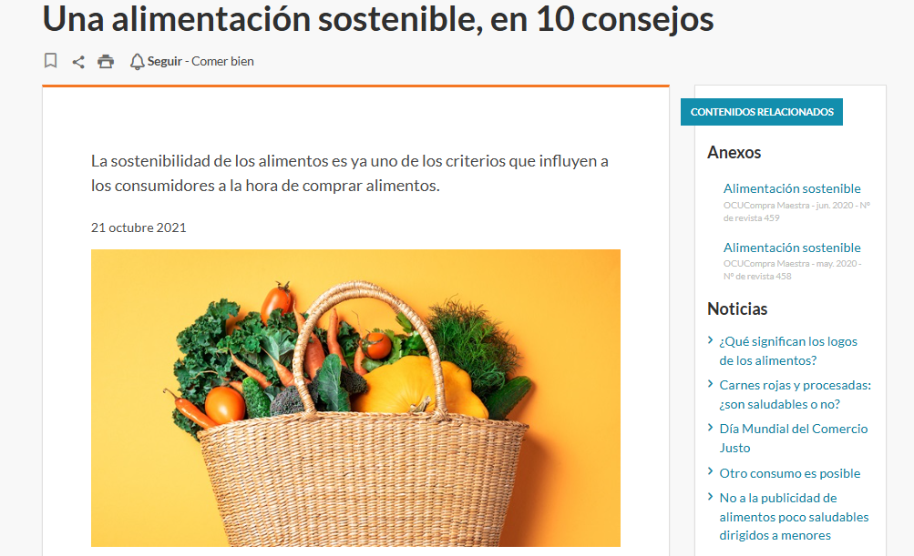

UD2. Sesión 2 ODS en el entorno personal (RA3.c)
Objetivo: conectar la sostenibilidad global con decisiones cotidianas.
-
Mini debate rápido:
-
“¿Qué cosas hacéis cada día que tienen impacto ambiental?”
- “¿Qué decisiones de consumo tecnológico afectan más al planeta?”
- Enlace con la informática: consumo eléctrico, obsolescencia, uso responsable de dispositivos, datos en la nube.
1 Hábitos de vida y consumo
Energía
- Stand-by, cargadores, eficiencia energética, uso de regletas.
Transporte
- Caminar, bici, compartir coche, transporte público.
Alimentación
- Productos de temporada, reducción de desperdicio.
Residuos
- Separación básica, RAEE, reutilización de dispositivos.
Información completa:
1.1 Energía
- El consumo energético en el ámbito doméstico y académico está muy relacionado con el uso de dispositivos electrónicos: ordenadores, móviles, cargadores, pantallas, routers…
- Muchos de estos equipos siguen consumiendo energía aunque no los estemos utilizando, especialmente en modo stand-by.
- Pequeñas acciones como desconectar cargadores cuando no están en uso,
- apagar el monitor en descansos breves o
- utilizar regletas con interruptor permiten cortar el suministro de forma completa y evitar fugas de energía innecesarias.
-
La eficiencia energética también es clave: elegir bombillas LED, activar modos de ahorro en el portátil o configurar la suspensión automática contribuye a reducir el consumo sin afectar al rendimiento.
-
Estas prácticas están directamente relacionadas con el ODS 7 (Energía asequible y no contaminante), que promueve el uso responsable y eficiente de la energía, y con el ODS 13 (Acción por el clima), ya que cada kWh que dejamos de gastar evita emisiones de gases de efecto invernadero.
- En el ámbito de la informática, se puede ver la sostenibilidad como una competencia profesional: optimizar equipos, mantener hardware eficiente, configurar políticas de ahorro y fomentar el uso responsable de infraestructuras digitales son prácticas que tienen impacto real y directo tanto en el entorno escolar como en el hogar.
1.2 Transporte
El transporte es uno de los sectores que más contribuye a las emisiones de CO₂.
- Reducir el uso del vehículo privado tiene un impacto inmediato en la sostenibilidad y, a menudo, también en la economía personal del alumnado.
- Alternativas como ir caminando, desplazarse en bici o patinete, utilizar transporte público o compartir coche con compañeros pueden disminuir considerablemente la huella de carbono diaria.
-
En trayectos cortos, el simple hábito de evitar desplazarse en coche cuando no es necesario se convierte en una acción de gran valor ambiental.
-
Estas decisiones conectan especialmente con el ODS 11 (Ciudades y comunidades sostenibles), que aboga por una movilidad más limpia y accesible, y nuevamente con el ODS 13 al reducir emisiones procedentes del transporte.
- Además, en entornos educativos de informática, se puede analizar el impacto digital asociado al transporte: apps de movilidad, rutas optimizadas, sistemas de alquiler de bicicletas, y hasta cómo la virtualización y el teletrabajo disminuyen desplazamientos innecesarios.

1.3 Alimentación
La alimentación es otro ámbito donde pequeñas acciones generan grandes cambios.
- Optar por productos de temporada y proximidad reduce la necesidad de transporte y refrigeración, dos factores de alto impacto ambiental.
- Es útil reconocer cómo decisiones cotidianas, como llevar almuerzos caseros en lugar de comprar productos muy procesados o empaquetados, disminuyen la generación de residuos y fomentan un consumo más saludable.
-
Asimismo, planificar las comidas o conservar correctamente los alimentos ayuda a evitar que se estropeen y terminen en la basura.
-
Esta dimensión está directamente alineada con el ODS 12 (Producción y consumo responsables), que promueve la reducción del desperdicio alimentario, y con el ODS 13, porque la industria alimentaria es una de las que más emisiones genera.
- Aunque parezca ajeno al ámbito informático, tiene relación con la gestión digital del consumo: apps que evitan desperdicios, plataformas para compartir excedentes o sistemas inteligentes de inventario doméstico.
-
El mensaje clave es que la sostenibilidad también se practica en decisiones personales que pueden incorporar con facilidad en su día a día.
-
https://www.ocu.org/alimentacion/comer-bien/consejos/%20consejos-alimentacion-sostenible

1.4 Residuos
La correcta gestión de residuos es esencial para minimizar el impacto ambiental.
- Separar adecuadamente envases, vidrio y restos orgánicos es un hábito básico,
- En ciclos de informática adquiere especial relevancia el tratamiento de RAEE: residuos de aparatos eléctricos y electrónicos.
- Móviles antiguos, cables, baterías, ordenadores obsoletos o ratones que ya no funcionan no deben tirarse a la basura normal.
- Su reciclaje permite recuperar metales valiosos y evitar que sustancias tóxicas terminen en suelos y aguas.
-
Además, antes de desechar un dispositivo, siempre es preferible intentar reutilizar, reparar o donar.
-
Este bloque se vincula claramente con el ODS 12, que promueve el reciclaje y la reducción de residuos, y con el ODS 13, ya que una correcta economía circular disminuye la extracción de recursos y las emisiones asociadas a la fabricación de nuevos productos.
- En informática, la reutilización de hardware, el reacondicionamiento de equipos o el montaje con piezas recuperadas son prácticas habituales que muestran al alumnado cómo la sostenibilidad puede integrarse en su futura profesión.
- Cada móvil que se repara en lugar de desecharse es un pequeño éxito sostenible.
Dinámica rápida: Los alumnos marcan en su cuaderno: ✔ “ya hago” ❗ “podría mejorar” ❓ “no lo había pensado”
2 Huella ecológica y huella de carbono
- Huella ecológica → recursos que consumes (alimentos, bienes, territorio).
- Huella de carbono → gases emitidos por decisiones (energía, movilidad, tecnología). Ejemplo: 2 horas de streaming, cargar el móvil, uso del portátil.
2.1 Huella ecológica
(Recursos que consumes: alimentos, bienes materiales, territorio utilizado para producir lo que consumes.)
Hábitos diarios que aumentan la huella ecológica
- Comprar comida muy procesada o envasada en exceso.
- Consumir alimentos fuera de temporada (requieren más recursos y transporte).
- Renovar dispositivos tecnológicos sin que estén averiados o sin aprovechar su vida útil.
- Comprar ropa o accesorios baratos que se usan poco y se desechan rápido.
- Utilizar productos de un solo uso: botellas, tuppers, vasos, bolsas, folios nuevos para todo.
- Pedir envíos online frecuentes y urgentes, implicando más transporte y embalajes.
- Mantener dos o más dispositivos electrónicos activos sin necesitarlos (móvil + tablet + portátil).
- Usar impresora en color para cosas que podrían revisarse digitalmente.
Hábitos diarios que reducen la huella ecológica
- Llevar botella reutilizable en lugar de comprar bebidas cada día.
- Consumir fruta y verduras de temporada y de proximidad.
- Reutilizar dispositivos: cambiar batería, ampliar RAM, limpiar hardware antes de sustituirlo.
- Comprar solo lo necesario: aplicar el “lo usaré más de 20 veces” antes de adquirir algo.
- Usar cuadernos digitales, apps de notas, o escaneo con móvil en vez de imprimir.
- Reutilizar bolsas, tápers y envases.
- Reparar pequeños aparatos o darles una segunda vida antes de tirarlos.
- Compartir herramientas, cables o accesorios en clase para evitar duplicar material.
2.2 Huella de carbono
(Gases emitidos: energía consumida, movilidad, producción digital.)
Hábitos diarios que aumentan la huella de carbono
- Usar el coche para trayectos cortos que podrían hacerse andando.
- Conducir solo en lugar de compartir coche.
- Tener el portátil encendido toda la tarde aunque no se esté usando activamente.
- Ver 2–4 horas de vídeo en streaming en alta resolución sin necesidad (consume energía del hogar y de servidores).
- Dejar cargadores enchufados permanentemente.
- Usar aire acondicionado o calefacción con ventanas abiertas.
- Tener muchas pestañas abiertas con vídeos o aplicaciones pesadas que fuerzan el hardware.
- Jugar videojuegos durante horas con el brillo al máximo o modo de alto rendimiento.
Hábitos diarios que reducen la huella de carbono
- Optar por caminar o usar transporte público al instituto.
- Apagar el ordenador o ponerlo en suspensión cuando no se usa.
- Configurar el brillo automático y el modo ahorro en portátil/móvil.
- Descargar vídeos o música para ver offline si se repiten muchas veces.
- Cargar el móvil solo lo necesario y desconectar el cargador después.
- Usar regletas con interruptor para apagar varios equipos de golpe.
- Hacer videollamadas en audio cuando no es imprescindible la cámara.
- Usar servicios en la nube de forma eficiente: cerrar sesiones, ordenar archivos, borrar duplicados.
2.3 El consumo responsable
Principios para el día a día:
- Reducir → comprar solo lo necesario.
- Reutilizar → alargar vida útil del móvil/portátil.
- Reciclar → puntos limpios, contenedores RAEE.
Economía circular
- Del “usar y tirar” al “reparar, reutilizar y reciclar”.
- Conexión con informática: reacondicionados, reciclaje de componentes, actualizaciones en lugar de compras.
Actividad final: Hoja de cálculo “2.2 Los ODS en el entorno personal”
- Instrucciones para el alumnado
- Copia y guarda la hoja de cálculo compartida
- Súbe alguna captura o incrústala en tu Porfolio
🛍️ Hábitos de compra
- Comparar antes de comprar (precio, garantía, reparaciones posibles).
- Elegir productos duraderos en lugar de los más baratos pero de baja calidad.
- Priorizar productos con etiqueta energética eficiente (A, A+…).
- Comprar solo lo necesario , evitando compras impulsivas.
- Revisar opiniones y vida útil esperada antes de adquirir tecnología.
🔌 Energía y tecnología
- Apagar dispositivos cuando no se usan (ordenador, monitor, impresora).
- Evitar el stand-by usando regletas con interruptor.
- Desenchufar cargadores que no estén en uso.
- Regular el brillo de pantallas para reducir consumo.
- Configurar modos de ahorro de energía en portátil y móvil.
♻️ Residuos y reciclaje
- Separar correctamente los residuos (orgánico, envases, papel…).
- Llevar RAEE (móviles, cables, routers, baterías) a puntos limpios.
- Reutilizar materiales (carpetas, USB, periféricos).
- Comprar a granel y con menos envases .
- Evitar productos de un solo uso (bolsas, vasos, toallitas…).
🍽 Alimentación y hogar
- Planificar comidas para evitar desperdicio.
- Elegir productos de temporada .
- Usar electrodomésticos con programas eco (lavadora, lavavajillas).
- Reducir el consumo de agua (dúchate en menos tiempo, cerrar el grifo).
- Aprovechar al máximo la comida (tuppers, congelar, reaprovechar recetas).
B) Indicadores personales
- % de cumplimiento semanal.
-
Semáforo (condicional):
-
Verde: >80 %
- Amarillo: 50–80 %
- Rojo: <50 %
C) Compromiso personal ODS
Breve texto final:
“Esta semana me comprometo a mejorar ___ porque contribuye al ODS ___.”